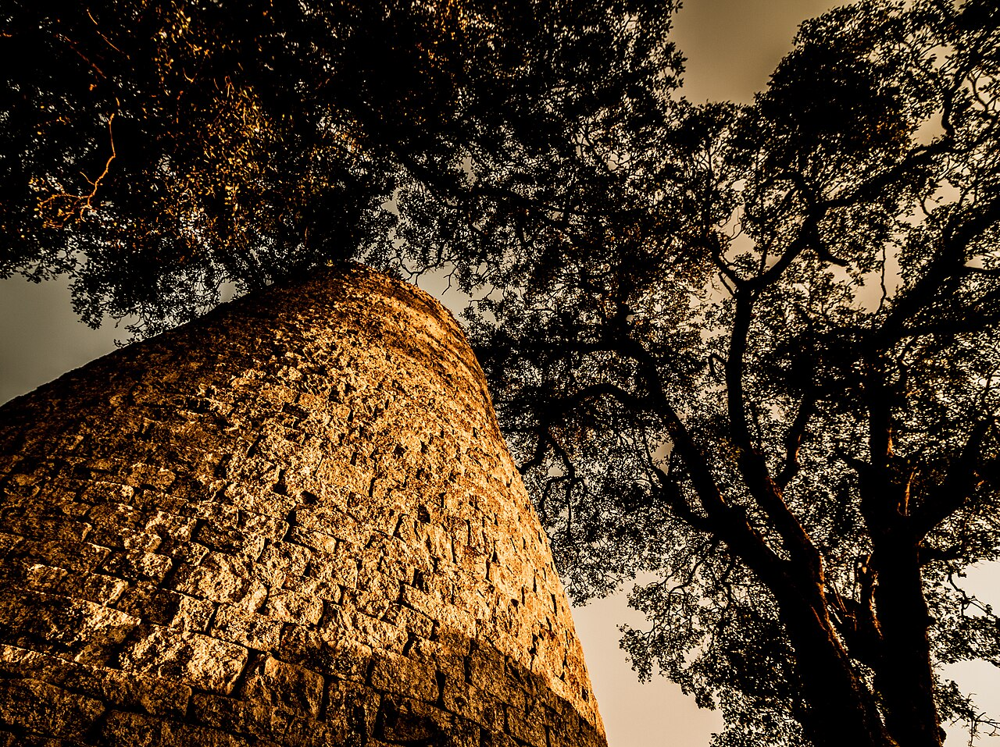

.jpg){kind=link}
Official Site Dossier & Maps · Great Zimbabwe and the Zimbabwe Plateau ↗
Primary institutional boundary map, conservation reporting, and site gazetteer for Great Zimbabwe and the Zimbabwe Plateau.
Deep dives / Africa & Middle East
Built from fitted courses of split granite without mortar, Great Zimbabwe was Southern Africa’s largest precolonial urban capital. Rather than an isolated marvel, modern Bayesian radiocarbon work places it inside a polycentric network connecting Limpopo Valley centers, southwestern plateau hills, and Indian Ocean gold trade.
Middle-to-Late Iron Age sequences across the Shashe-Limpopo Basin and Zimbabwe Plateau, c. 900–1700 CE.

Southern African plateau and Shashe-Limpopo confluence research localities. Points locate monumental capitals and stratified excavations, not territorial borders.
c. 1100–1450 CE
Hill Complex, Great Enclosure, Valley compounds, and surrounding unwalled dhaka town neighborhoods. [1] [3] [12] [13] [14]
-20.27°, 30.93°c. 1000–1300 CE
Shashe-Limpopo basin capital where sacred hilltop kingship, stone terracing, and royal gold burials developed. [6] [15] [17]
-22.20°, 29.37°c. 1050–1400 CE
Southwestern plateau terraced hilltop revealing monumental elite architecture roughly contemporaneous with K2–Mapungubwe. [7]
-20.88°, 28.92°Early 2nd millennium CE
Southern Zambezian settlement linking Limpopo and plateau agropastoral social networks. [8]
-21.15°, 29.30°c. 1400–1685 CE
Western Torwa/Butua stone-terraced capital characterized by decorated retaining walls and Ming/European trade goods. [9] [16]
-20.16°, 28.41°Antiquarian treasure hunting by colonial syndicates in the late nineteenth century destroyed crucial stratigraphy inside Great Zimbabwe’s Great Enclosure. Careful re-examination of archival excavations alongside Bayesian radiocarbon modeling shows stone-walled phases overlapping Mapungubwe and peaking in the fourteenth and fifteenth centuries CE. [1] [2]
Beyond the iconic curved granite walls (P-style and Q-style coursing) and Conical Tower, dense residential compounds of beaten dhaka clay floors surrounded the stone enclosures, where residents smelted iron and gold, spun cotton, kept cattle, and hosted craftsmen alongside royal court complexes. [3] [5]
| Capital / Site | Peak Chronology | Architectural & Political Significance | Sources |
|---|---|---|---|
| K2 & Mapungubwe | c. 1000–1300 CE | Transition from valley cattle kraal center to sacred hilltop terrace capital | [6] |
| Mapela Hill | c. 1050–1400 CE | Early terraced prestige walls challenging single-origin models of Zimbabwe complexity | [7] |
| Great Zimbabwe | c. 1100–1450 CE | Monolithic soapstone birds, Conical Tower, gold crucibles, and coastal trade ties | [1] [4] |
| Khami (Torwa-Butua) | c. 1400–1685 CE | Checkered terraced platforms after Great Zimbabwe’s political decentralization | [9] [11] |
Archaeological syntheses increasingly move away from simple diffusion models toward multi-centric state formation across southern Zambezia. Local alluvial and reef gold mining, cattle herding, and ivory hunting fueled long-distance exchange reaching Swahili ports such as Kilwa Kisiwani. [11] [10]
Published excavations and remote-sensing surveys across Great Zimbabwe, Mapungubwe Hill & K2, Mapela Hill distinguish monumental construction events from long centuries of everyday craft, agricultural provisioning, and ritual reuse—relying on radiocarbon series, ceramic seriation, epigraphy, and geoarchaeological sediment cores rather than unverified royal annals alone. [1]
Exchange connections preserved across metallurgical ores, timber/stone sourcing, exotic prestige wares, and architectural styles demonstrate how each local horizon sat inside much broader continental corridors across africa. [2]
Ongoing conservation balancing living community custodianship, climate/erosion stressors, and non-invasive geophysical mapping continues to refine older 19th- and 20th-century excavation hypotheses. Map coordinates pinpoint documented archaeological properties and research zones rather than rigid ancient territorial borders. [12] [1]
Open the source maps for their original detail, legends and dates. Their coverage and reproduction terms belong to the issuing institution.
Primary institutional boundary map, conservation reporting, and site gazetteer for Great Zimbabwe and the Zimbabwe Plateau.
Open this era on global Explore ↗ Open Africa & Middle East atlas ↗ Climate, sea level & ice-sheet context ↗
Sources checked and linked above; geological and historical dating methods follow the primary papers.